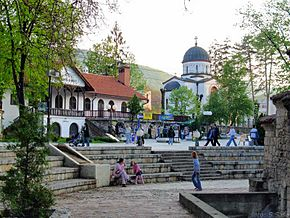

Sokobanja
Sokobanja se nalazi u jugoistočnoj Srbiji, između planina Ozren i Rtanj, na obalama reke Moravice i na nadmorskoj visini od 400 m. Od Beograda je
udaljena 230 km.
Za lekovitost sokobanjskih termalnih izvora znalo se još u vreme starih Rimljana. Sokobanjsko javno kupatilo-amam prvi put pominje turski putopisac
Evlija Čelebija 1663. Posle oslobođenja od Turaka knjaz Miloš naređuje da se obnovi amam i podigne konak, a lekara Leopolda Erliha postavlja za prvog
banjskog lekara. Početak organizovanog turizma u Sokobanji računa se od 1837. godine, kada je iz kancelarije knjaza Miloša napisan uput (vaučer) za
zastavnika Lazarevića za lečenje u banji.
Početkom 20. veka bogati trgovci i mehandžije u Sokobanji grade vile za svoj boravak, ali i smeštaj gostiju. Između dva svetska rata gradi se prvi
savremeni banjski hotel – „Evropa“ (današnji konak „Park“), podižu se parkovi, uređuju izletišta, uvode vodovod i javna rasveta. Savremeni razvoj
Sokobanje počinje šezdesetih godina 20. veka, kada se pored hotelskih grade prateći privredni objekti i razvija saobraćajna infrastruktura.

Prirodni lekoviti faktori Sokobanje su termomineralni izvori (temperature od 28 do 45,5°C), koji se koriste za kupanje i inhalacije, kao i umereno-
kontinentalna klima koju karakteriše povoljan atmosferski pritisak i umerene padavine, malo magle i vetrovitih dana, visoka koncentracija kiseonika,
ozona i negativnih jona u vazduhu i odsustvo aerozagađenja.
Lečenje se obavlja u Specijalnoj bolnici za nespecifične plućne bolesti „Sokobanja“, Prirodnom lečilištu „Banjica“ i Specijalnoj bolnici za plućne
bolesti „Ozren“.
U Sokobanji se leče:
- bronhijalna astma
- psihoneuroze
- neurastenije
- lakši oblici povišenog krvnog pritiska
- hronični reumatizam i išijas
- stanja posle povreda
- anemija
- hronična ginekološka oboljenja
U okviru Specijalne bolnice „Sokobanja“ postoji bazen sa termalnom vodom, teretana, sala za male sportove i teren za mali fudbal. Gosti Sokobanje
imaju mogućnost šetnje prostranim i lepo uređenim parkom.
Biblioteka u Sokobanji ima tradiciju dužu od 130 godina. Raspolaže sa preko 30.000 knjiga, a u svom sastavu ima međunarodni centar za turističku i
ekološku dokumentaciju. Zavičajni muzej raspolaže eksponatima iz oblasti arheologije, etnologije i istorije. Ispred muzeja je uređen amfitetar koji
se u letnjoj sezoni koristi za pozorišne predstave i književne večeri.
Sokobanja je tokom cele godine mesto gde se održavaju brojne sportske, kulturne i turističke manifestacije, kao što su „Prva harmonika Srbije“,
Međunarodni salon ekološke karikature, Umetnička kolonija „Sokograd“, „Zlatne ruke Sokobanje“, „Sveti Jovan Biljober“, Banjsko kulturno leto i druge.
Tokom letnje sezone postoji mogućnost kupanja na uređenim kupalištima na reci Moravici, Bovanskom jezeru i veštačkoj akumulaciji u klisuri Moravice,
koje pruža uslove i za ribolov .
Gosti Sokobanje imaju mogućnost za lov, s tim da se organizuju i specifične lovne ture, kao što su lov foto-aparatom i kamerom, lov sa branjem
lekovitog bilja i lov sa boravkom i spavanjem u starim planinskim kućama.
U okolini Sokobanje se nalaze brojna izletišta. Šumskim i asfaltnim stazama se može doći do Oštre čuke, najvišeg vrha Ozrena (1.075 m). Ozrenskim
stazama dolazi se do manastira Jermenčić, Tatomirovog grada i Ozrenske pećine, duge 580 m. U blizini je vodopad Ripaljka, visine 11 m, koga gradi
reka Gradašnica. U ozrenskim livadama sakriven je izvor Đerđelez, poznat još u tursko doba. Planina Rtanj je poznata po lekovitom bilju.
Kalinovica je izletište sa bukovom šumom i izvorom hladne vode. Nedaleko od izletišta Lepterija nalaze se ostaci utvrđenja Soko grad. „Vrmadžanski
grad“ se nalazi 2 km od Rtnja, u blizini istoimenog jezera, koje je pogodno za ribolov. Izvor reke Moravice se nalazi 15 km od Sokobanje, pravcem
prema Knjaževcu i predstavlja jedinstven prirodni fenomen, jer reka nastaje od više izvora koji se ne mogu uočiti. Sesalačka pećina se nalazi nedaleko
od sela Sesalca, bogata je pećinskim nakitom i uređena je za posetioce.